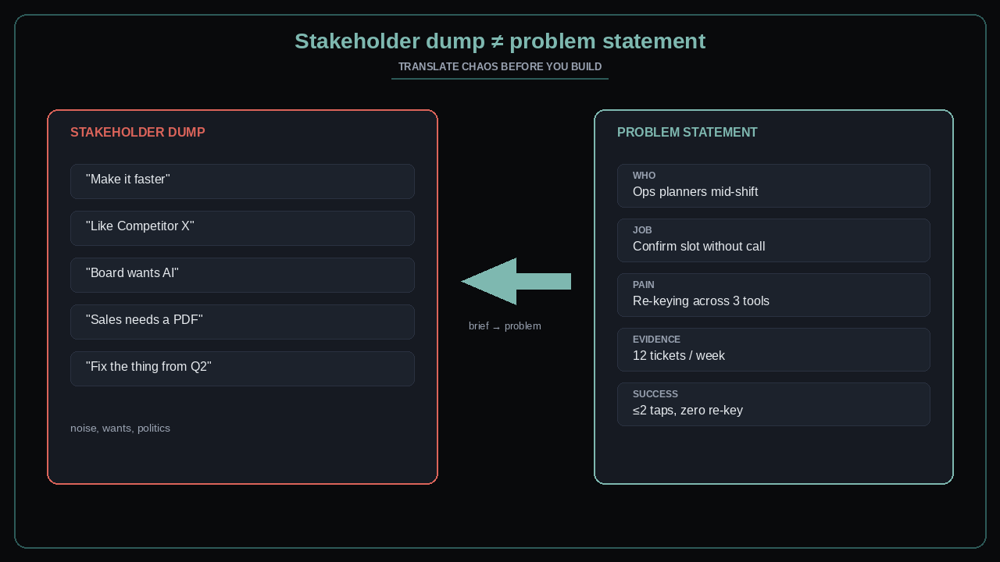

Stakeholder dump ≠ problem statement
Source: George / prodmgmt.world (@nurijanian)
original post
What it claims
A stakeholder dump is not a problem statement. Chaos from meetings, Slack, and “can we just…” notes must be translated into who, job, pain, evidence, and success — before it becomes a backlog item. Pasting the dump into a brief→problem step is the discipline; shipping the dump as a story is the failure mode.
Why it matters for a PO
POs inherit feature lists dressed as strategy. If you accept the dump as the requirement, Sprint Planning becomes estimation of politics. Your job is to convert stakeholder noise into a problem the team can test — then negotiate scope against that problem, not against every sentence in the email.
3 takeaways
- Dump ≠ problem. Refuse to refine until who / job / pain / evidence / success are written.
- Translation is PO craft: same inputs become a decision-ready problem, not a feature laundry list.
- If the story still reads like the stakeholder’s paragraph, you skipped the step.
Practice this week
Take one live stakeholder ask. Without adding scope, rewrite it as: who, job-to-be-done, current pain, evidence (ticket/metric/quote), success signal. Bring both versions to the next sync and ask which one the team can build against. Kill any backlog item that still only has the dump.